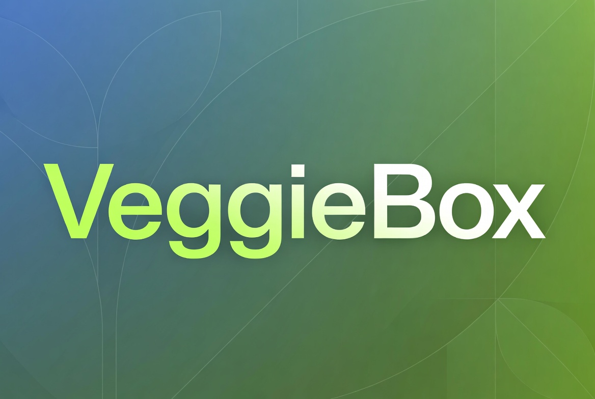
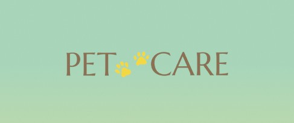
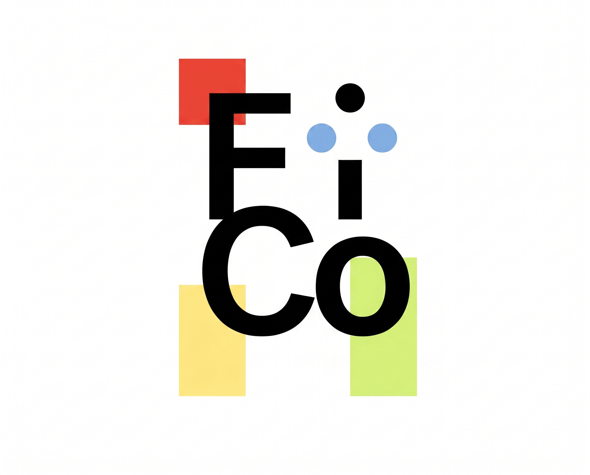
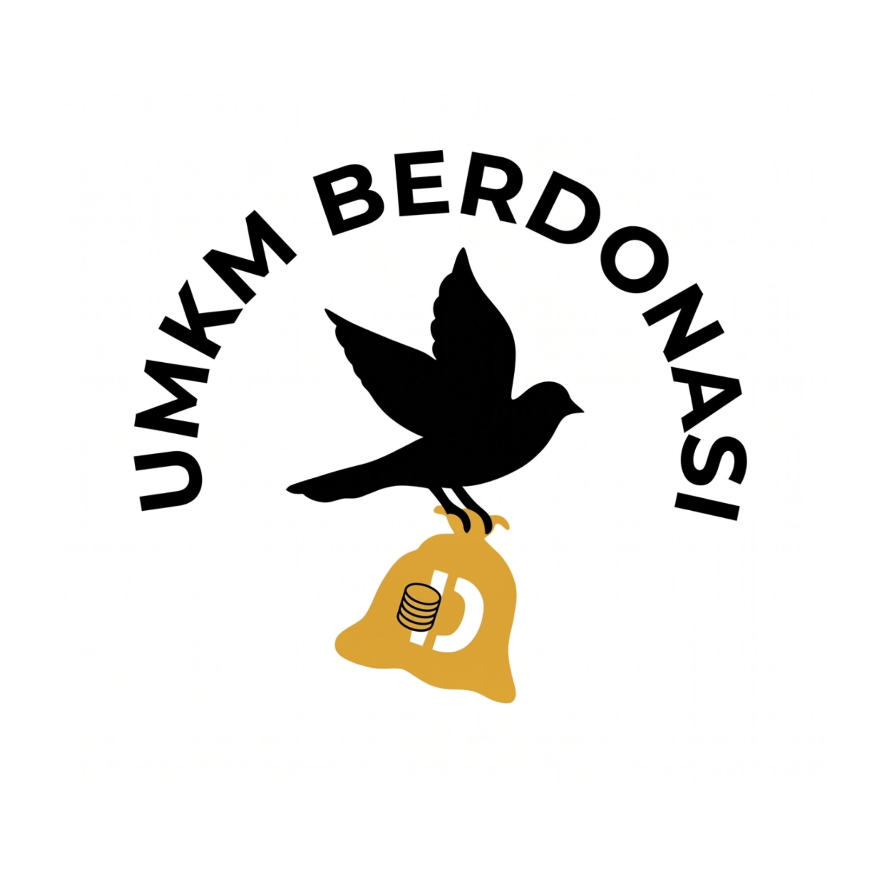

All Projects
Curious about what I've been building? Here are all my projects.

VeggieBox (E-commerce Application)
VeggieBox is an e-commerce application designed to simplify the shopping experience for fresh vegetables and cooking ingredients.

NoBuRi (POS System)
NoBuRi is an innovative culinary venture collaboratively founded by myself and two partners within a strategic three-person team. We offer a practical rice burger concept wrapped in Nori, featuring diverse modern fillings designed for high-mobility lifestyles. Beyond product development, I spearheaded the integration of a custom Point of Sale (POS) system to digitalize transaction management, optimize inventory accuracy, and enhance end-to-end customer service efficiency to support sustainable business scalability.

Pet Care (Pet Care Services Application)
Pet Care is a mobile application designed to address the inefficiencies of manual booking systems by providing an integrated on-demand platform for grooming and veterinary consultation services.
Nagoya Mansion Hotel & Residence Batam (Business Performance Analytic Report)
As part of a team project for the Business Performance Analytic course at Binus University , I co-authored a comprehensive organizational analysis aimed at optimizing performance management and workforce stability for Nagoya Mansion Hotel & Residence Batam. The project involved formulating specific, measurable Key Performance Indicators (KPIs) tailored to essential departments, including Finance, Operations, Marketing, and HRD. To transform raw operational data into actionable insights, we engineered interactive data dashboards using PowerBI to visualize monthly employee trends, structural transfers, and turnover categories. Additionally, we implemented strategic frameworks like the Balanced Scorecard and Critical Success Factors (CSF) , conducted a detailed risk assessment on organizational underperformance , and evaluated forward-looking methodologies for integrating Artificial Intelligence (AI) to automate performance reviews and feedback loops.
Case Study: Telecommunications: Optimizing Customer Acquisition
This data analytics project focused on evaluating a comprehensive dataset of 20,256 user sessions to optimize multi-channel customer acquisition strategies for a telecommunications provider via Red Ventures. The primary objective was to deploy advanced data visualization techniques to uncover traffic patterns and determine whether specific customer segments should receive an online cart-focused or call-center-focused website experience. Utilizing Tableau, I engineered an interactive digital marketing dashboard that evaluates technical profiles, behavioral metrics, conversion timeframes, and geographical trends. By developing custom calculated metrics, the project successfully mapped user preferences—including a 1.51% cart conversion rate and a 1.77% phone conversion rate—equipping stakeholders with key insights to optimize digital ad spend and improve resource distribution.
Case Study: Telecommunications: Optimizing Customer Acquisition
This data analytics project focused on evaluating a comprehensive dataset of 20,256 user sessions to optimize multi-channel customer acquisition strategies for a telecommunications provider via Red Ventures. The primary objective was to deploy advanced data visualization techniques to uncover traffic patterns and determine whether specific customer segments should receive an online cart-focused or call-center-focused website experience. Utilizing Tableau, I engineered an interactive digital marketing dashboard that evaluates technical profiles, behavioral metrics, conversion timeframes, and geographical trends. By developing custom calculated metrics, the project successfully mapped user preferences—including a 1.51% cart conversion rate and a 1.77% phone conversion rate—equipping stakeholders with key insights to optimize digital ad spend and improve resource distribution.
SoapGo (Laundry Web)
SoapGo is a web and desktop-based application project designed specifically for laundry business management.

Supermarket Database
Designed and normalized a scalable relational database for a supermarket system USING SQL.

CateringKu (Catering Web/App)
CateringKu is a web and mobile application design that functions as a marketplace connecting catering service providers with customers.

FiCo (Competition Web)
FiCo is a Competition Aggregator and Community Platform serving as a comprehensive information hub for multicategory competitions.

UMKM Berdonasi (Donation Web)
UMKM Berdonasi is a digital platform designed to facilitate MSMEs in distributing humanitarian aid in an organized manner.